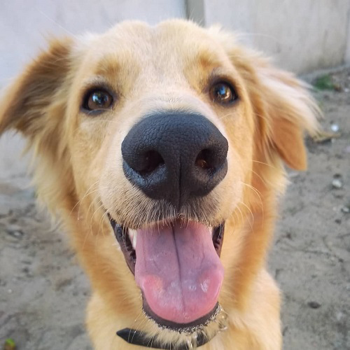

Insira seu texto sobre a origem dos cães
Insira seu texto sobre coleta de dados
Adote um Cão e ganhe um Amigo.
A adoção de um cão não apenas enche sua vida com alegria, mas também dá a um amigo de quatro patas uma segunda chance. Cada cão tem uma história única e está ansioso para encontrar um lar amoroso. Ao adotar, você está fazendo a diferença na vida de um animal e ganhando um companheiro leal para todas as aventuras da vida. Não perca a oportunidade de mudar duas vidas: a sua e a do seu novo amigo peludo.
Saiba mais sobre nossas ONGS parceirasConte-nos um pouco da sua Histótia com seu Peludo.

Querido(a) Adotante, Com um coração generoso, você deu um lar a um peludo necessitado. Sua escolha enche nossos corações de gratidão. Obrigado por dar amor, abrigo e uma nova vida. Vocês são a razão pela qual a esperança brilha mais intensamente. Com carinho, Equipe Infocao
Compartilhe a história do seu peludo.
Insira seu texto sobre ONGs
Insira seu texto sobre o mural